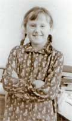
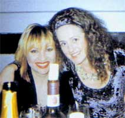
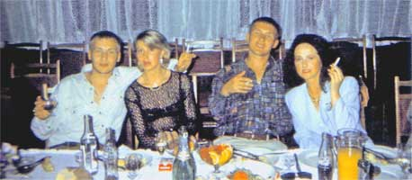

Анатолию Ярмоленко
и
пастору Наталье Потопаевой.
Лилия ШЕВЧЕНКО
Дружок
Горечь настоящего предательства я впервые прочувствовала, когда мне было четыре года. Тогда мы
с мамой жили в небольшом белорусском городке Ивенце. Она сутками работала в районной больнице,
чтобы как-то обеспечить нашу жизнь. А я целыми днями одна сидела в маленькой комнатке, снятой
за небольшие деньги.
Заскучав как-то хмурым осенним днем, я пригласила к себе в гости хозяйскую собачку. Дружок был
очень рад моему приглашению. Он вилял хвостом, лизал мне руки и преданно заглядывал в глаза. Я
была так счастлива. Наконец-то у меня появился настоящий друг!
Мама потом не раз вспоминала, как она бежала в отделение милиции, откуда позвонили с вопросом: "Елена Николаевна, у вас есть дочь, которую зовут Лиля?"… Как она передумала обо всем на свете, что могло случиться с ее девочкой, которую она вынуждена была оставить дома на целые сутки… Как в кабинете начальника увидела что я, слава Богу, жива и невредима. А рядом со мной стоит сумка с испуганной собакой, которая смотрит то на меня, то на начальника милиции.
Этот мой поход сыграл решающую роль в нашей с мамой жизни - очень скоро государство выделило нам двухкомнатную квартиру в центре городка, меня устроили в детский садик, и наша жизнь стала куда как веселее. Жили мы, конечно, очень скромно, но мама всегда с большой любовью и заботой относилась ко мне, аккуратненько и красиво одевала, всегда старалась отдать мне лучший кусочек. Экономила она только на себе.
В чем же смысл?
Когда наступало лето, мама отвозила меня на три месяца в деревню к бабушке. Наблюдая неспешную деревенскую жизнь, я совсем по-взрослому задумывалась над смыслом всего происходящего. Мне было тогда лет десять, но жизнь, которую я видела вокруг, по моему разумению, мало чем отличались от жизни коров. Что у них было?
|  | Пастбище, хлев, пастбище, хлев… А у нас, у людей? С работы домой, поели, поспали, утром
опять на работу, вечером домой, поели, поспали и так каждый день. Все это казалось мне
невероятно скучным, и все мое маленькое существо бунтовало против того, что я видела вокруг. Я
была уверена, что в жизни должен быть какой-то другой смысл. Я не хотела жить, как все и была
уверена, что есть другой смысл, есть, просто люди не видят его. А он несомненно есть! Его
просто надо найти.
Я нашла его только сегодня, в сорок восемь лет. Чтобы найти этот смысл мне понадобилось почти сорок лет… Я пережила ослепительные взлеты, я кружилась в вихре обожания и популярности, я падала на самое дно жизни, я пережила ни с чем не сравнимое опустошение, страх, стыд и ужас скитаний по вокзалам и притонам, к которым меня привела не поддающаяся никакому лечению алкогольная зависимость. |
Юность
В 1967 году мы переехали в Минск, мама снова вышла замуж, родилась моя сестра. Я помогла маме, водила сестричку в ясли, делала поручаемую мне работу по дому, очень хорошо училась в школе. Учителя всегда выражали маме благодарность за мое воспитание.
Первый глоток
Впервые я выпила перед своим первым выходом на сцену. Жутко волновалась, страшно боялась опозориться из-за какой-нибудь ошибки. И для храбрости выпила. В то время продавали маленькие бутылочки с алкоголем по 30-40 граммов, и частенько я слышала от своих друзей: "Тяпнем для храбрости!". Они выпивали понемногу перед экзаменами, а я ведь тоже сдавала экзамен, и очень ответственный - перед зрителями. Я купила маленькую бутылочку и опрокинула в себя ее содержимое прямо за кулисами. Сразу стало легко и спокойно. Станцевала я отлично. В один миг испарились все комплексы и страхи.
Страх опозориться, быть отвергнутой зрителями, заставил меня найти средство, которое помогло чувствовать себя свободной и независимой, помогло защититься от возможного провала. В дальнейшем, выпивая, я всегда переставала бояться, сыпала остроумными, как мне тогда казалось, шутками, была душой компании и чувствовала себя сильной, смелой и свободной. Именно выпивка стала для меня средством, благодаря которому я легко справлялась со своими комплексами. Алкоголь придавал мне уверенности и значимости, в которой я так нуждалась. Страх стать отверженным, возможно, движет большинством тех, кто однажды взял в руки рюмку или шприц.
Первая любовь
Он был красив и талантлив, и не влюбиться в него я просто не могла. Его звали Владимир, он учился в радиотехническом и собирался стать военным. Когда меня по распределению отправили в Логойск, руководить танцевальным коллективом в районном доме культуры, Владимир стал приезжать ко мне по выходным. Каждый будний день был наполнен ожиданием только одного: когда наступит суббота и я снова увижу того, к кому так рвется моя душа. Чувства окрыляли нас, и когда он приезжал, то казалось, что все вокруг переставало существовать. В мире оставались только мы одни.
Вскоре я поняла, что жду ребенка. Но Владимир принял эту новость очень холодно, сказал, что не знает, чем я тут занимаюсь целую неделю, что видит он меня только по выходным, что это, скорее всего, не его ребенок.. На прощание мой любимый посоветовал сделать аборт. И исчез...
Я не могла убить ребенка. Мне едва исполнилось 18 лет, у меня не было ни мужа, ни денег, ни жилья, но был смысл жить - это мой малыш, с которым я никогда уже не буду одинока. Я ходила с огромным животом, а кумушки не упускали случая сказать мне вслед что-нибудь обидное.
Через три месяца после рождения Юли Владимир зашел ко мне и увидел нашу малышку, похожую на него как две капли воды. Чувства вспыхнули с новой силой и вскоре мы поженились.
Но обида на мужа не проходила. Я очень любила его, но не могла простить предательства, не понимая, как единственный человек, которому я доверилась, мог так поступить со мной.
Его родители не приняли ни меня, ни внучку. Они хотели, чтобы у их сына была жена из состоятельной уважаемой семьи, а не бесприданница без роду, без племени. А я, по их мнению, связала Владимиру руки собой и ребенком, поломала ему жизнь.
Я изо всех сил старалась доказать, что они ошибаются. Я красиво одевалась, ходила на модные светские рауты, заочно окончила Минский институт культуры. Мечтала я только о том дне, когда стану богатой, успешной, состоятельной, знаменитой и докажу им всем, что очень многого стою.
Германия
Владимир окончил институт и стал военным. У нас родился сын. Мы вели обычную жизнь рядовой советской семьи. А вскоре муж получил назначение на службу в Германию в Торгау, недалеко от Лейпцига. Я ехала в эту страну с надеждой, что жить за границей будет намного интереснее, чем дома. Однако все оказалось иначе. Существование в военном городке за высоким забором с короткими выездами в город на шоп-туры проходило тоскливо. С обязанностями по дому я справлялась легко и быстро, а тратить оставшуюся уйму времени на болтовню на скамейках и перемыванием чьих-то косточек было невыразимо скучно.
Я попробовала устроиться на работу, но выбор оказался невелик - склад военной продукции. Достаешь из ящиков снаряды, каждый из которых весил 30-40 килограммов, снимаешь с них смазку, старую краску, красишь снова, укладываешь обратно в ящики. Тяжело и вредно. Начавшаяся аллергия на растворители и краску заставила отказаться от работы.
Но сидеть сложа руки тоже было невыносимо, и у меня появилась идея - организовать детский сад для детей военных. Начальник гарнизона поддержал меня, под детский садик отдали помещение кафе. За садик люди платили символическую сумму, но ее мне хватало на то, чтобы оплатить расходы, связанные с содержанием детей, а оставшаяся часть шла мне на зарплату. Это был мой первый самостоятельный бизнес.
Не могу сказать, что эта работа мне очень нравилась, но с детьми все же было легче и приятнее, чем со снарядами. А единственным развлечением в той жизни были дискотеки, которые устраивались в гарнизонном кафе. Уложив детей спать, мы гуляли до рассвета. Мне всегда нравились большие компании, я любила быть в центре внимания. Дискотеки были единственной отдушиной в череде серых будней. Только там, как следует выпив, среди шума, гама и веселья, я чувствовала, что живу.
Однако утром надо было рано вставать и идти на работу. После ночных возлияний голова просто раскалывалась от боли. Однажды утром я пошла к нашему доктору за таблеткой от головной боли. Осведомившись о причине моего недомогания, он предложил похмелиться. Помню, я через силу влила в себя рюмку водки и сразу почувствовала огромное облегчение, словно ожила. С тех пор похмеляться я стала регулярно. Алкоголь постепенно занимал в моей жизни все больше и больше места. Незаметно для себя я превращалась в алкоголика.
Начало карьеры
| Мы вернулись из Германии в конце 80-ых. Служба в армии к тому времени уже не считалась престижной и не приносила почти никакого дохода. Владимир уволился в запас, но хорошей работы найти не мог. Мне с работой повезло больше. Я устроилась в молодежный центр "Гамма", существующий при одном из минских райкомов комсомола, и стала заниматься новым по тем временам делом - организацией гастролей эстрадных групп и исполнителей. Страна сходила с ума от "Ласкового мая", и он стал первой группой в моем гастрольном туре. Тратиться на рекламу не было даже смысла - билеты и без того разлетались в считанные минуты. С "Ласковым маем" я объездила все областные и районные центры Беларуси, потом маленькие поселки и деревеньки. Успех был ошеломляющий. Вокруг нашего автобуса в каждом городке толпились девчонки в слезах и соплях, умоляя забрать их с собой. |

|
Законы шоу-бизнеса
Знакомства и контакты завязывались очень легко: по натуре я человек очень общительный и коммуникабельный, мне всегда удавалось найти общий язык со всеми. Я быстро постигала азы шоу-бизнеса и вскоре поняла: чтобы заключить выгодный контракт на проведение концертов той или иной группы, нужно завоевать сердце директора группы. Делалось это по одной и той же простой схеме. Я приезжала в Москву, снимала дорогой номер в престижной гостинице "Россия" и приглашала директора нужной мне группы на разговор. Переговоры всегда проходили в ресторане за богато накрытым столом, дорогое спиртное лилось рекой. Во время застолья оговаривались условия гастролей и заключался договор. Мне нужно было держаться на высоте и пить наравне с мужиками. К концу переговоров, после подписания договора, я обычно была уже в невменяемом состоянии. Во избежание каких-то недоразумений со мной всегда ездили так называемые охранники, один или два крепких парня. Их основная работа заключалось в том, чтобы после очередного банкета взвалить меня на плечи и отнести в номер.
|  |  |
Найти смысл
Я не могла сказать о себе, что по-настоящему счастлива. Не покидало ощущение какой-то внутренней пустоты. Причиной моего пьянства было не безденежье или нереализованность. Я пила потому, что получала от алкоголя ощущение внутренней свободы, и думала, что это поможет мне найти нечто, что наполнило бы мою жизнь смыслом. У меня были деньги, интересная работа, масса проектов, обо мне, как об удачливой бизнес-леди писали газеты, меня уважали и узнавали на улице. Я была единственной из коллег, кого пригласили на день рождения к Алле Пугачевой. Для меня не был ничего невозможного и неприемлемого. Если мне нравилось лицо мужчины, я добивалась этого мужчину, но часто оказывалось, что приятная внешность не соответствует внутреннему содержанию. Так я искала настоящей любви, но, конечно же, не находила.
Период моей молодости пришелся на время, когда любое проявление индивидуальности пресекалось. Ты мог быть только частью толпы. От этого тоже пили. Так погибли многие творческие люди, тот же Владимир Высоцкий. Я помню, как будучи в уже очень сильном подпитии, сидела в ресторане московской гостиницы "Россия" и любовалась великолепной пальмой, украшающей интерьер зала. Официант, заметив куда я смотрю, сказал: "Вот под эту пальму ходил по малой нужде Высоцкий, когда бывал в таком же состоянии, что и вы".
"ВладЛи"
Мой бизнес рос, и рос объем работ. Мне нужен был помощник, и вместе с мужем мы открыли фирму, где я была генеральным, а он коммерческим директором. Название фирме мы дали, соединив вместе первые слоги наших имен - "ВЛАДЛИ". Фирма процветала. Мужу нравилось, что я зарабатываю огромные деньги. Были периоды, когда я привозила домой пачки купюр в банковских упаковках и складывала их в диван. Другого места для хранения многочисленных пачек как-то не находилось.
Конечно, не все концерты были аншлаговыми, бывали и просчеты. Никогда не забуду случай с группой "Комбинация", очень популярной в то время (солистками были Алена Апина и Танечка Иванова). Я была уверена в успехе, потому что накануне провела 9 аншлаговых концертов группы "Любэ" в Минском дворце спорта. Но, к сожалению, я ошибалась. Зал был заполнен лишь на 15-20 процентов: Здравый смысл говорил мне: "Лиля, неужели ты совсем сошла с ума и будешь проводить этот концерт? Опомнись, в зале море пустых мест".
Но этот голос отодвигался на задний план моими амбициями и гордостью. Я говорила себе: "Какая разница? Эти концерты оплачены мной, и даже если не будет ни одного зрителя в зале, я имею право устроить подобное зрелище для себя одной". Я понимала, что вся материальная ответственность за плохие сборы лежит на мне, и расплачиваться за просчет тоже придется мне. И такие случаи в практике бывали не раз, но они никогда не останавливали меня, а наоборот, пробуждали новые силы, подсказывали новые идеи, рисовали новые планы. Я знала, что всегда смогу найти выход, и то, что я потеряла сегодня, с лихвой верну завтра. Моя душа ликовала, и казалось, что мне по силам абсолютно все.
Клубная жизнь
В начале девяностых годов прошлого века нашу устоявшуюся, понятную и прогнозируемую жизнь советских граждан сменил полный хаос. Появились новые хозяева жизни, изворотливые дельцы, которые умели вертеться и соображали, как можно побольше "хапнуть", пользуясь неразберихой. Тех, кто вылез "из грязи в князи", было тогда много, они хотели чувствовать свою исключительность и готовы были за это платить. Я быстро сообразила, как сделать так, чтобы платили они мне. Организовала элитарный клуб, стала привозить звезд шоу-бизнеса не для всех желающих, а для ограниченного круга очень богатых людей. Публику привлекало шикарное обслуживание, еда на серебряной посуде, богемский хрусталь, изысканные вина и дорогая заморская кухня. Цена билета на такой концерт доходила иногда до 500 долларов, но это зрителей-бизнесменов не останавливало.
Тогда было модно и очень престижно проводить время на подобных вечеринках. Скучающие дома жены новоиспеченных богатеев только так могли продемонстрировать широкой публике свои наряды и украшения. Однажды мне пришла идея провести концерт Вилли Токарева на крыше Минского Дворца молодежи. Столики и стулья вынесли на крышу, сделали концертную площадку для артиста и ведущего. Но в последний момент стали собираться тучи. Мы не растерялись - быстро договорились с одной военной частью о парашютах, которые они навесили над нашим рестораном под ночным небом. Но когда пошел сильнейший ливень, конструкция не выдержала. Сперва провисла, а потом и вовсе провалилась. Потоки воды хлынули на столики с закусками и на зрителей в роскошных нарядах, увешанных бриллиантами и изумрудами.
Увидев весь этот кошмар, я подумала, что пришел конец моему бизнесу. Ан нет. Подвыпившая публика не выражала никакого возмущения и находила все это пикантным, свежим и необычным. Дамочки в туфлях от "Гуччи" зажигательно выплясывали по лужам, не придавая значения тому, что больше эти туфельки надеть будет уже нельзя. Машины, которые работали по доставке алкоголя, перевыполнили в тот вечер все возможные планы. Вилли Токарев говорил, что он запомнит этот концерт на всю жизнь.
Рабство
Когда выпиваешь первые сто грамм, кровь играет, хочется всех любить. Вторая рюмка укрепляет чувство радости и уверенности в том, что ты талантлив, крут, все можешь и всего добьешься. На третьей рюмке ты замечаешь, что начинаешь трезветь, когда все вокруг пьянеют. Выпиваешь четвертую, чтобы не отставать, догоняешься пятой - а утром ничего не помнишь. Мне говорили: "Лиля, ты спиваешься, ты алкоголичка!".

Печальная любовь
Однажды мне предложили провезти по Крыму группу "Фристайл". В это время из группы ушел основной солист Вадим Казаченко, и популярность "Фристайла" упала. Но я все равно согласилась - так вышло, что выбирать было все равно не из чего. Новым солистом "Фристайла" был Сергей Дубровин - красивый длинноволосый парень, совсем еще юный. Я в то время не испытывала недостатка в поклонниках, скорее наоборот, их было даже слишком много. Но когда Сергей забегал ко мне в номер то за таблеткой, то позвонить, мне было приятно внимание молодого красавца. Мне нравился этот парень, а ему было очень нелегко в то время. Нужно было держать марку после ухода известного всей стране Вадима Казаченко, и он ее держал достойно.
Однажды ему предложили песню "Ах, какая женщина!". Он позвонил мне из Полтавы и запел в трубку: "Ах, какая женщина, какая женщина! Мне б такую…" Наш разговор длился почти всю ночь… Он подбирал интонации, тональность, изменял слова и пел, пел, пел, посвящая будущий хит нашим отношениям, нашим планам, нашей любви.
Одно омрачало счастье тех дней - моя алкогольная зависимость. Сергей хотел побороть ее своей любовью. Однажды он приехал в Минск и сказал, что намерен остаться со мной навсегда, наивно полагая, что это сможет мне помочь. Но я уже не верила никому, в том числе и себе самой.
Когда мы расставались, Сергей отрезал прядь своих волос и отдал ее мне. Эта прядь еще долго была моим талисманом и напоминала о несбывшихся мечтах, растоптанных моим алкоголизмом.
Развод
Роман с Сергеем Дубровиным, конечно, не мог остаться незамеченным моей семьей. Я честно обо всем рассказала мужу и предложила развестись. Он пытался меня образумить, увещевал, уговаривал одуматься. Ведь мы прожили вместе почти пятнадцать лет, у нас было двое детей и общее дело. Но я уже запуталась. В пылу пьяной ссоры я даже хотела покончить собой. Взяла шарфик и пошла в туалет вешаться. Накинула на шею петлю, примотала ее к плафону и стою на унитазе, жду реакции мужа. Он стучит в дверь, я молчу. Владимир выломал дверь, и увидев, что я жива, рассмеялся: "Висишь? Ну и виси дальше!". Я жутко обиделась: неужели муж так хочет моей смерти? Оказалось, Владимир сам приделывал плафон в туалете и знал, что держится эта конструкция очень сабо и точно меня не выдержит, так что волноваться за мою жизнь нечего.
Но в конце концов мы все же развелись. Мне остались дети и квартира, а он забрал собаку и машину. Но партнерские отношения в бизнесе мы решили сохранить и продолжали работать вместе.
Зазеркалье шоу-бизнеса
Попасть в алкогольную зависимость в среде шоу-бизнеса очень и очень просто. Признание публики требует колоссального напряжения от артиста, а спиртное - самый простой способ снять постоянный сильнейший стресс. Поэтому очень многие эстрадные звезды накрепко привязаны к алкоголю.
Совсем недавно в одном из телевизионных ток-шоу я увидела известного в начале 90-х эстрадного певца Михаила М***. Огромные мешки под глазами, небрежность в одежде… По всему было видно, что этот человек без алкоголя не живет. А я это знала точно. Последний раз с Мишей мы встретились во время проведения фестиваля женского кино в Минске. Моей фирме предложили заняться проведением концерта, и одним из участников я пригласила Михаила М***. С ним было много хлопот. Нужно было по десять раз подниматься в номер и напоминать ему, что пора ехать на площадку. Когда я в очередной раз появлялась в дверях гримерной Михаила с просьбой идти на сцену, его подружки кричали на меня, угрожали, говорили, что приедут в Москву, пожалуются кому следует, и моей работе в шоу-бизнесе придет конец. К началу концерта он уже обязательно был под шафе. Перед выходом на сцену Михаила загримировали, одели, отекшие глаза он закрыл темными очками. Но во время песни очки с носа у него слетели, и вместо того, чтобы петь дальше Миша начал бегать по сцене и искать их под звучание своей же фонограммы. Зрители был в шоке. Я тоже.
Другие картинки из прошлого еще хуже. Никогда не забуду, как солист одной очень популярной группы пил так, что в антракте попросту засыпал у себя в гримерной. Чтобы привести его в чувство, перед выходом на сцену я приносила ему стакан водки, он в бессознательном состоянии выпивал эту водку полулежа, приходил в себя, поднимался, одевался и выходил на сцену.
А некоторым исполнителям во время концерта на колонку ставили стакан с водкой, артист между песнями подходил, смачивал горло, и никто в зрительном зале не знал, что это не вода, а освежающие его сознание 100 грамм.
Такова была изнанка шоу-бизнеса, его зазеркалье.
Жизнь "по понятиям"
Начало девяностых в нашей стране укладывается в цепочку "перестройка - беспредел - крупный бизнес - большие деньги". Для того, чтобы бизнес был защищен, у каждой фирмы тогда обязательно была "крыша" - группа ребят из криминальных структур, которым приходилось отдавать часть прибыли. Во времена тогдашнего беспредела это была обязательная для всех бизнесменов плата за возможность спокойно работать. Безопасность моего бизнеса гарантировала группа серьезных минских "авторитетов".
В отношениях с артистами тоже были свои особенности. Чтобы звезда приехала на гастроли, нужно было весь причитающийся гонорар отдать артисту до концерта. Поскольку прибыль появляется после концерта, а отдавать деньги нужно было до, я нередко обращалась в банк за кредитом или брала деньги под процент у полукримиминальных коммерческих фирм. Это было обычной практикой в то время, и я не была исключением. Моя "крыша" добросовестно меня опекала. Отношения наши строились на четких взаиморасчетах. Они относились ко мне с уважением, потому что видели - я играю по-крупному и всегда выполняю свои обязательства. Эти люди вели переговоры с "крышами" моих конкурентов и помогали решать спорные вопросы финансовых взаимоотношений.
Мои опекуны всегда были почетными гостями на концертах и получали дорогие подарки от лица фирмы. Я не скупилась, они это ценили и всегда предупреждали меня о возможных конфликтах в городе заранее, давали дельные советы и знакомили с нужными людьми. Я была для них курицей, которая несет золотые яйца. Но когда со мной случилась беда, ни один из их телефонов не ответил…
Я видела, что происходит с людьми, которые занимались бизнесом на моем уровне и допускали просчеты или ошибки. Нередко это стоило им не только банкротства, но и жизни. Но я была уверена, что со мной такого произойти не может. Это могло случиться с кем угодно, но только не со мной.
Попытки вылечиться
Многочисленные попытки вылечиться от алкоголизма заканчивались крахом. К тому времени у меня был богатый опыт в этой области. Я около тридцати раз кодировалась у самых известных специалистов, принимала всяческие гомеопатические препараты и знахарские зелья, которые, по мнению знающих людей, позволяли зависимому человеку ограничить употребление спиртного. Моя мама работала медсестрой в наркологическом отделении Республиканской психиатрической больницы в Новинках, и сколько раз она привозила мне к себе в отделение, не сосчитать. Там мне вводили успокоительные уколы, делали капельницы. Становилось легче. Недельные курсы лечения останавливали тягу к алкоголю, но только до выхода за территорию больницы.
Я не могла понять тогда, почему врачи не могут вылечить мою болезнь. Ведь любые болезни лечатся. Физические болезни лечит терапевт, психические - психиатр. А почему же меня невозможно вылечить от алкоголизма, раз это болезнь? Тогда я не понимала, что алкоголизм - это не физический и не психический недуг. Это болезнь духа. Поэтому освободить от этой болезни может только Бог.
Наркотический кошмар
Непрекращающиеся возлияния сильно сказались на моей внешности. От меня постоянно разило спиртным, под глазами образовались мешки, при ходьбе без конца шатало. Еще немного - и с таким партнером никто не захочет иметь дело. Когда я поняла это, то нашла способ скрыть свои проблемы, - наркотики. Знающие люди объяснили, что у них масса преимуществ по сравнению с алкоголем. Мне показалось, что это для меня выход. Наркотики заглушают тягу к спиртному, и когда принимаешь дозу, выпивать не хочется. Кроме того, наркотики поначалу вернули мне работоспособность и силы. Доза дает ощущение всемогущества, хочется летать, кажется, что нет таких преград, которые нельзя было бы преодолеть. Я стала чувствовать себя намного лучше и увереннее. Какое-то время мне удавалось вести дела в прежнем режиме, все запланированные встречи проходили в срок, осуществлялись новые проекты. Когда действие дозы заканчивалось и иллюзии рассеивались, я понимала, что по-прежнему лечу в бездну. Но в то время у меня было достаточно денег, а быстро достать новую дозу не составляло никакого труда.
Однажды в Самаре после одного концерта известной актрисы Ирины Мирошниченко (мы с ней дружили и жили в одном отеле, только в разных номерах) я проснулась от того, то дверь в мой номер выломали. Оказывается, Ирочка вместе со своим другом, с которым она приезжала на гастроли, целое утро звонили и стучали ко мне в номер, и страх за мою жизнь побудил их обратиться за помощью к администрации гостиницы. Она сидела передо мной на коленях и кричала: "Лиля, очнись! Лиля, приди в себя! Что ты с собой делаешь?". Но я не слышала ее. Мне казалось, что никто меня не понимает, что никто не может ощутить хотя бы сотую часть той боли, которую испытывала я.
Это сначала человек выпивает или колется для того, чтобы лучше себя чувствовать, а потом уже вынужден пить или колоться, чтобы не умереть. Сначала человек приобретает зависимость, а потом зависимость приобретает его. Из своего опыта я знаю, что сначала пила, чтобы стать общительнее, чтобы ушел страх неудачи. Потом пила, чтобы расслабиться после напряженной работы. Потом чтобы заснуть. И всегда для выпивки находилось оправдание. В конце концов, я перешла на наркотики, чтобы забыться.
Есть интересная формулировка: зависимость - это когда то, что тебя интересует, занимает все твое время. Так было и со мной. Тяга к спиртному была настолько велика, что только алкоголь имел значение в моей жизни. Это было важнее работы, семьи, друзей. Они пытались встать между мной и выпивкой или дозой. Все было бесполезно.
Беспроигрышная идея
Однако наступил момент, когда я поняла, что моему бизнесу и мне скоро придет конец. Наркотики уже не помогали держаться в форме. Запои длились неделями. Речи о прибылях не было. Работа, шла только на то, чтобы отдавать постоянно образующиеся долги. И хоть я пока еще держалась на плаву, делать это было все сложнее и сложнее. Приближение конца уже витало в воздухе. Как чуть заметно в осеннем лесу серебрится паутина, так чуть заметным мне виделось и мое будущее.
И тут у меня появилась дерзкая идея - провести на минском стадионе "Динамо" концерт Аллы Пугачевой. Это позволило бы мне расплатиться с долгами и получить довольно приличную прибыль. Но я не стала сразу сильно рисковать, замахнувшись на проведение такого масштабного мероприятия, и провела для начала концерт в Минском Центральном Доме Офицеров. Билеты даже по 100 долларов расходились с невероятной быстротой. Меня опять захватил азарт, и я договорилась с директором Аллы Борисовны Дмитрием Яковлевичем Цвангом на проведение шоу на стадионе с участием самой Примадонны в окружении эстрадных звезд первой величины. По городу, где только возможно были развешаны растяжки и афиши, шла обширная реклама на телевидении и радио. Город ждал звезду.
Обязательным условием проведения концерта была, естественно, стопроцентная предоплата. Я взяла несколько кредитов, собрала нужную сумму и вручила их коммерческому директору своей фирмы. Эту должность по-прежнему занимал мой бывший муж Владимир. Он всегда лично отвозил деньги артистам. Что могло измениться на этот раз? Ничего.
Крах
Утром накануне концерта мне позвонили из театра Аллы Пугачевой и поинтересовались, почему до сих пор не пришли деньги. Я бросилась разыскивать Владимира. Его брат сказал мне, что не знает, куда пропал Владимир, но на столе у них дома лежит записка: "Уехал искать лучшей жизни".
Вот это был удар! Земля уходила из-под ног, мысли путались. Вспомнился тот случай из далекого детства, когда собачка, с которой я дружила, взяла и слопала всю колбасу за моей спиной….
Я знала, что примадонна не вылетит, пока не получит предоплату. Это был крах. Концерт отменили. Закрывшись дома, я пила с утра до вечера, не поднимала трубку телефона. Пожалуй, не было тогда газеты, которая бы не написала об этом отмененном концерте. Возмущенный зритель требовал возврата денег за билеты у организаторов концерта. А организатор концерта, то есть я, находилась в непрекращающемся запое.
По факту невозврата денег за билеты на меня завели уголовное дело. В кратчайшие сроки, за копейки распродалось все мое имущество: квартира (меня с детьми просто выбросили на улицу), драгоценности, меха и мебель… Но я была должна еще очень много денег криминальным структурам, а продавать больше было нечего.
Мне угрожали бандиты и кредиторы, я боялась за жизнь своих детей, боялась себя. Я не видела выхода и хотела одного - уйти от реальности, от этих страхов, от бесконечных бессонных ночей…Началась жизнь в постоянном страхе. С тех пор я ничего не слышала больше о своем коммерческом директоре - отце моих детей.
Побег
Я решила сбежать из Минска вместе с дочкой. Сели в машину, тронулись. Но выехать со своего двора не успели - на нас наехал КАМАЗ. Я сразу поняла, что это мне урок. А что делать? К кому бежать? В голове вертелось: только бы дочка осталась жива. Она лежала без сознания, вся в крови. Я вызвала "скорую", отвезла свою девочку в больницу, объяснила маме, что на меня идет охота, и улетела в Краснодар. Там у меня были друзья, которые с радостью приняли меня и очень сочувствовали моей беде. Но не пить я уже не могла. Редкие трезвые минуты напоминали мне о том, что произошло. Холод начинал пронзать все мое тело, комок подступал к горлу, страх парализовал мой разум, и я снова и снова бралась за бутылку. Моя прогрессирующая болезнь сопровождалась неприятными симптомами - я начала мочиться под себя. Комната, которую мне любезно предоставили друзья, постепенно превращалась в помойку. Через месяц непрекращающегося запоя, я уже с трудом могла одеться. Меня постоянно бросало в пот. Начались галлюцинации. Я постоянно видела рядом с собой белую собаку, большую, пушистую, размером с медведя. Она всегда находилась слева от меня, и ни на шаг не отставала. Я садилась за стол - собаку усаживала рядом. Я садилась в машину - сперва открывала заднюю дверцу и впускала собаку. Люди странно смотрели на меня и думали, что у меня "поехала крыша". Но для меня эта собачка была абсолютной реальностью.
Однажды ночью я увидела рядом с собой по углам кровати четыре огромных беса. Они были такими страшными. Я почему-то заметила, что колени у них повернуты в обратном направлении, и до смерти испугалась, инстинктивно начала читать "Отче наш". Я произносила слово за словом, и бесы отступали от кровати шаг за шагом. И вдруг прямо надо мной раздался голос: "Сегодня забирать я тебя не буду, сегодня у меня есть дело в соседнем подъезде". Проснулась утром - а в соседнем подъезде горе, убили ночью молодого человека, когда он парковал свою машину.
Тогда я еще не знала, что духовный мир управляет физическим, и то, что мы видим в физическом мире - материализация того, что сформировано в духовном. Бог сотворил Землю и поместил ее во время. Он сотворил все на Земле, в том числе и человека, и подчинил свое творение определенным законам и принципам. Есть законы физического мира, и мы их знаем. Но есть и законы духовного мира. В этой области большинство из нас безграмотно. Незнание и несоблюдение законов физического мира может повлечь за собой трагедию. Например, если переходить дорогу на красный свет, можно попасть под машину, а если прыгнуть в шестого этажа без парашюта, то можно разбиться насмерть. Точно так же и незнание законов духовного мира и непонимание того, как они работают в физическом мире, приводит к нарушению этих законов и печальным последствиям.
Когда терпение моих друзей иссякло, они отправили меня к другим друзьям, те - к третьим, к четвертым... Так продолжалось, пока все друзья не закончились и я не оказалась на вокзале. Совершенно случайно я встретила там бывшего директора "Фристайла" Ростика (Ростислава Савичева). Он пожалел меня, забрал к себе домой, несколько дней выхаживал вместе со своей женой. Когда я пришла в более-менее приличное состояние, Ростислав купил мне билет на самолет в Самару и дал с собой денег. Я благодарна ему за тот поступок по сей день.
Друзья
В Самаре у меня была любимая подруга Наташа, с которой я познакомилась на одном из Сочинских курортов. Наташа выделила мне отдельную комнату в своей квартире, сама с мужем и ребенком жила в соседней. Они очень сочувствовали мне и старались поддержать.
Рождество
В минуты просветления желание выжить и выбраться из этого ада было настолько сильным, что я все же нашла в себе силы и начала работать в Самаре в одном из городских центров культуры. Используя московские связи, стала устраивать корпоративные вечеринки в богатых фирмах, приглашать на них известных артистов. Опять появились деньги. Часть посылала маме на содержание моих детей, еще смогла снять квартиру в центре Самары. Худо-бедно, но я продержалась около полугода. Я опять задумалась о смысле жизни, задумалась о Боге. Что-то внутри меня постоянно побуждало меня идти в церковь. Я считала себя истинно верующим человеком. Я посещала храм два раза в год - на Рождество и на Пасху, освящала яйца, куличи, а утром съедала за завтраком освященную пищу и запивала стаканом водки. Я молилась, как умела, и не теряла надежды на то, что с божьей помощью смогу выбраться из своей зависимости. Мне хотелось подружиться с церковью поближе. Может быть, там мне удастся найти смысл жизни?
Я пошла в епархию Самары и записалась на прием к самому Владыке, вынашивая идею большого рождественского праздника. Владыке идея понравилась, тем более что предложенная акция могла собрать для епархии большую сумму добровольных пожертвований от коммерческих структур.
После рождественского концерта по традиции был банкет. Я сидела за отдельным столиком рядом с владыкой. На безукоризненно накрытых столах стояли закуски, свечи и только красное вино - православная церковь не отрицает употребление красного вина. Я надеялась, что после беседы с Владыкой я смогу получить ответы на мучившие меня вопросы и понять, как мне справиться с моей зависимостью. Но, к сожалению, мои надежды не оправдались…
Возвращение
После рождественского банкета все оставшиеся продукты, мороженое и конфеты я распорядилась раздать по детским приютам, а все ящики с алкоголем перевезла к себе домой. Две недели к ряду я опустошала ящик за ящиком, не выходя из своей квартиры. Навестившая меня как-то подруга Наталья увидела, что я погибаю, и сообщила моим родным. Через пару дней приехала моя сестра. Она хотела увезти меня домой, где мне смогли бы оказать хоть какую-то помощь. Я сопротивлялась, как могла, возвращаться в Минск было страшно. Но сестра сказала, что даст мне очередную бутылку, только когда я сяду в самолет. Все мои слезы, истерики, и угрозы выброситься из окна оставляли ее равнодушной. Пришлось покориться. Так я снова оказалась в Минске.
Утром в дверь позвонили. На пороге стояла милиция. Мне объявили, что заведено уголовное дело по несостоявшемуся концерту А.Б. Пугачевой, и вручили повестку в прокуратуру. Но в этот день я даже не могла подняться с постели. Бедная мама отпаивала меня лекарствами.
В милиции на допросах я ничего не стала скрывать. Моей вины в том, что деньги исчезли и концерт был сорван, не было. Но доказать это я не могла. Надо мной висела реальная угроза оказаться за решеткой. Сообразив, что подписку о невыезде у меня не взяли, я решила бежать от греха подальше. Позвонила одному старому приятелю, который жил в Алуште, объяснила, что у меня большие проблемы и напросилась в гости.
Симферополь
Я ехала в Симферополь на поезде. Проснулась, как всегда, от жуткой головной боли и с одним желанием - опохмелиться. Вместе со мной в купе был какой-то мужчина. Я рассказала ему в красках историю своих злоключений, пытаясь разжалобить и дать мне денег на выпивку. На одной из станций перед Симферополем мужчина вышел. А в купе забежал маленький мальчик, спросил, как меня зовут, и поставил на стол две бутылки минералки. Он сказал, что тот дядя, который ехал в купе, попросил передать это для меня…
В Симферополе меня встретил мой друг со своим водителем. Как и раньше, меня приняли с распростертыми объятиями, накрыли прекрасный стол. Эти добрые люди были полны сочувствия ко мне и предложили пока остановиться у них. Наутро мой друг ушел на работу, а я выяснила у его жены, что купить в Крыму спиртное не проблема, совсем не обязательно идти на базар или в магазин. В каждом доме имеется человек, у которого есть на реализацию вино. В то время крымские заводы по производству вин платили зарплату своим работникам не деньгами, а продукцией.
Уже через пару минут нашла нужного человека, купила бутылку вина, вернулась, выпила ее. То же самое я сделала в обед, вечером, на следующий день... Через несколько дней семья, приютившая меня, уже косо смотрела в мою сторону. Я могла забыть, что в квартире находится ребенок и выйти из ванны обнаженной, у меня начались проблемы с головой. Я понимала, что надо уйти из этого дома. Но куда?
Куда идти?
Сергея, водителя своего друга, я встретила в подъезде, когда шла за очередной бутылкой. Мы поздоровались, разговорились, пошли к нему распить бутылку. К счастью, Сергей жил один. Его дочь росла в деревне у родителей, а у бывшей жены была своя жизнь. Двухкомнатная квартира была полностью в распоряжении Сергея.
Это был выход, и я попросила сдать мне одну комнату под честное слово, что скоро начну заниматься организацией концертов, буду очень хорошо зарабатывать и оплачу все расходы в тройном размере. Он мне поверил.
Жили мы скромно. На кухне вместо стола стояла бочка, на которой мы с Сергеем пили и ели. Меня это вполне это устраивало. Я не замечала, что опускаюсь все ниже и ниже. Гостеприимность этого человека, открытость его сердца и радушие подкупили меня. Мне было хорошо рядом с ним. А главное, он тоже любил выпить, и у нас постоянно собирались компании. Утром Сергей уходил на работу, а я слонялась по подъезду и по двору, знакомилась с соседями, легко находила с ними общий язык, рассказывала забавные истории из жизни шоу-бизнеса и всегда подводила разговор к тому, что хорошо бы по этому поводу выпить. И меня всегда угощали. Но эти мои хитрости имели эффект лишь поначалу, пока люди не разобрались, что мне от них нужно только одно - выпить.
Потихоньку от меня отвернулись все. Сергей долго терпел рядом с собой вечно пьяную бабу, которая не собиралась работать, несмотря на каждодневные обещания. Он искренне ко мне привязался и даже женился на мне, надеясь, что таким образом сможет положительно повлиять на мою несчастную жизнь. Но, в конце концов, он не выдержал и выгнал свою непутевую жену из дома. Так я оказалась на улице.
Моя Алушта
Кто бывал в Алуште, тот помнит, что в здании городского автовокзала стоит большая пальма. Она и стала моей крышей, моим новым местом жительства. Под этой пальмой я обычно проводила ночь, а утром на вокзал приходили люди, и увидев на лавочке бомжиху, а под ней лужу, говорили мне: "Женщина, посмотрите, что вы делаете, уйдите отсюда, здесь же дети…". Я понимала, что они, наверное, правы, вставала и шла как обычно, - в никуда.
Погревшись на солнышке и немного обсохнув, я направлялась на набережную. Выбрав в толпе курортников доброго, на мой взгляд человека, я подходила и улыбаясь, как можно душевнее старалась проговорить: "… знаю, что вы мне не откажите, вы дадите мне пять копеек"… Потом, сжимая в кулаке брезгливо протянутые пятаки, шла в пивную и получала там вожделенный стакан пива, приводивший меня в чувство. А дальше уж как Бог пошлет. Если повезет, можно было подобрать за кем-то плохо объеденный рыбий скелет или еще какие-то объедки. Бывает, кто-то расщедрится и нальет сто грамм или оставит в пепельнице хороший окурок.
Я быстро нашла себе компанию. Нас было человек пять или шесть, таких же бродяг, как и я. Мы старались держаться вместе и всегда делились друг с другом тем, что удавалось добыть за день. Самой стабильной статьей доходов была продажа ворованных в алуштинских садах фруктов. Эту добычу можно было продать за бутылку водки.
После первых ста граммов у меня проходили трясучка и тошнота. Я буквально оживала, просыпался былой кураж и чувство собственного достоинства. С пафосом рассказывала я друзьям-бомжам истории о том, что песня "Ах, какая женщина!" посвящена мне, что раньше я дружила с Аллой Пугачевой, сидела за одним столом с Валерием Леонтьевым, а Филипп Киркоров целовал мне ручки. Но в эти "сказки" никто не верил. Часто за них били - чтоб не завиралась.
А из всех радиоточек неслось: "Ах, какая женщина, какая женщина! Мне б такую…" Когда я слышала эту песню, меня душили слезы. Не верилось, что это все было со мной. Все внутри сжималось в комок. Каждый аккорд заставлял вздрагивать, как от прикосновения раскаленных углей к телу.
Жизнь с бомжами
В существовании бомжей отсутствует понятие "должен". Бомж никому ничего не должен. Когда ты опускаешься на самое дно, тебе не нужно ходить на работу, не нужно зарабатывать деньги, не нужно воспитывать детей, не нужно думать, что ты будешь есть, где спать, что купить и т.д. Жизнь просто несет тебя как щепку по волнам, и ты полностью предоставлен только самому себе. Живешь просто потому, что живешь. И нужно для этой жизни очень немного - каждый день чуточку напрячься, чтобы украсть что-то по мелочи, обмануть кого-то, что-то выпросить и получить желанные пол-литра. А дальше все уже будет хорошо до следующего восхода солнца. Бомж хозяин только своей жизни.
Конечно, у каждого взрослого человека, опустившегося на самое дно, были на это свои причины и взрослые люди сами делают свой выбор. Но мне на всю жизнь врезалась в память картина, оказавшая неизгладимое впечатление даже на мой помутненный тогда рассудок. В каждом городе есть притоны, где собираются бомжи, алкоголики, наркоманы. В одном из таких притонов в Алуште жила женщина, у которой было трое детей. Там было две комнаты. В одной из них постоянно находились гости, а в другую она никого не пускала. Как-то мне удалось заглянуть во вторую комнату. Там на полу на грязных тряпках лежали худые, изможденные голодом дети. Она наливала в кастрюлю воды, подсаливала ее, разбалтывала в воде яйцо и кипятила все это пару минут. Потом эта кастрюля относилась в комнату детям. И это была их еда на весь день…
Еще одна боль
У меня была подруга Татьяна. Она так же, как и я, страдала от алкогольной зависимости. Когда-то во время моих гастрольных туров по побережью Татьяна работала у меня распространителем билетов. Она была очень толковым сотрудником, но алкоголь и из нее сделал бомжиху. Днем мы вместе бродили по городу, собирали бычки, а ночью складывали ящики в лифтовую шахту и укладывались там спать.
Однажды мы во вполне благодушном настроении шли на очередной "промысел", и Тане вдруг стало плохо. Она упала в обморок прямо на тротуаре, а я не смогла привести подругу в чувство, и, опасаясь за ее жизнь, кинулась к дороге, чтобы остановить первую попавшуюся машину. Не обратив внимания на то, что в притормозившем авто было трое мужчин, я села в него и стала умолять шофера подъехать к лежащей на дороге подруге и отвезти ее в больницу. Однако машина понеслась мимо Татьяны в совершенно другом направлении. Двое мужчин держали меня за горло и руки, пока машина ехала далеко за город на побережье. На одном из пустынных пляжей меня избили и изнасиловали. А на прощание так ударили по голове, что я потеряла сознание и очнулась лишь глубокой ночью.
Надо мной было темное небо, усеянное бесчисленными яркими звездами. Вокруг никаких признаков жизни. Я долго брела по берегу, пока не вышла на какую-то дорогу. Издалека доносились едва слышные звуки музыки, я двинулась им навстречу и вскоре пришла к придорожному кафе. Увидев меня, продавец ужаснулся: грязная майка и куча синяков - это все, что на мне было в тот момент. Но он понял, что со мной случилась беда, налил сто грамм и указал на заброшенную столовую, где сторож, если его упросить, мог приютить меня на ночь. Добрый человек пустил меня в столовую, постелил какую-то тряпку на пол и, слава Богу, эту самую жуткую ночь в моей жизни мне не пришлось коротать под открытым небом.
А утром я поняла, что жить больше нет никаких сил. Я побрела по железнодорожным путям в сторону города. Сзади послышались звуки приближающегося поезда. Справа была гора, слева бетонная стена высотой в человеческий рост, а сзади на меня надвигалась моя смерть, и мне было все равно. Лишь в последний момент какая то сила заставила меня вскарабкаться по шершавой бетонной стене наверх. Мои колени были разодраны в клочья, руки окровавлены, но я все же не погибла и выбралась. Зачем?
Через пару часов пути впереди показалась станция. Там я познакомилась с бомжом, который собирался ехать сдавать бутылки. Он единственный подошел ко мне и предложил свою помощь. Остальные люди брезгливо отворачивались от нас. Но я тогда уже привыкла к тому, что бомжей никто не считает людьми. Благополучно живущему человеку не приходит в голову, что у каждого бомжа тоже есть сердце и за каждым стоит очень нелегкая судьба... На меня могли натравить собак, вполне приличные на вид люди оскорбляли меня, смеялись и плевали вслед…. Я не обижалась, понимая, что сама виновата в том, что со мной происходит. Любимая выпивка, без которой я не мыслила своего существования, стояла между мной и всем миром. Страсть к алкоголю лишила меня всего, что было когда-то дорого.
Попытка вырваться
Добравшись до города и разыскав Татьяну, я рассказала ей о случившейся беде. Мы в очередной раз решили, что нужно выбираться из дерьма и начинать другую жизнь. Мне казалось, что в Самаре, где у меня были хорошие связи, можно будет начать свое дело. Я буду заниматься организацией концертов, а Татьяна поможет с распространением билетов. План казался нам весьма разумным и вполне осуществимым.
Нужно было где-то взять деньги и купить билеты на поезд. В Алуште у Татьяны была квартира, где жили ее уже взрослые дети. Им было стыдно за свою бесконечно пьяную мать, и они часто не пускали ее на порог. Но когда мы поделились с ними нашими планами, дети обрадовались - их мама собирается уехать из города. Они купили нам билеты и посадили на поезд, видимо, в глубине души надеясь больше никогда нас не увидеть.
Еле-еле мы доехали до Самары. Пока мы спали пьяные, у нас украли последние деньги. Когда мы добрались до квартиры моей самарской подруги, дверь нам никто не открыл. Таксист требовал деньги за такси, но взять с нас было нечего. Он пообещал прислать знакомых бандитов. Целый день мы просидели в подъезде, но в квартире так никто и не появился. Наконец, соседи рассказали, что жильцы уехали. В тридцатиградусный мороз в туфлях и кроссовках мы двинулись в сторону вокзала. Уже там я обменяла свои кроссовки у какого-то старика на валенки 45 размера. Стало чуточку теплее. Наутро через адресное бюро, с превеликим трудом разыскала я адрес еще одной своей знакомой, с которой мы когда-то служили в Германии. Когда мы приехали к Римме и она сама открыла дверь, у меня потемнело в глазах. Я потеряла сознание от радости.
Подруга приняла нас. Она рассчиталась с таксистом, постелила нам постель, приготовила ванну, накрыла стол. И все это несмотря на то, что сама жила очень скромно, потому что ее мужа ее убили, и приходилось одной воспитывать двоих детей. Мы пробыли в этом гостеприимном доме несколько дней. Римма видела, в каком плачевном состоянии мы обе находимся, очень сочувствовала нам и объяснила, что в Самаре у нас есть только один вариант - замерзнуть под забором. А в Крыму теплее, там у Татьяны все же есть дети, и шансов выжить больше. Нам было нечего возразить, мы и сами все прекрасно понимали. Римма купила билеты до Симферополя и посадила нас на поезд.
Обратно в Крым
Возвращались мы в Алушту накануне Нового года. Люди в поезде были в прекрасном настроении, проблем с выпивкой не было. Но наступил момент просветления. Я вышла в тамбур и вспомнила о том, что у меня тоже где-то есть дом. У меня есть мама, у меня есть дети. Я не знала, живы они или нет. Прошло уже очень много времени с момента моего исчезновения из Минска. Я стояла в тамбуре и просила Бога, чтобы Он сохранил жизнь моим родным.
Вокруг нас были счастливые люди, они ехали туда, где их кто-то ждал. Только нас с Татьяной никто и нигде не ждал. Было очень больно и обидно.
Дорога была долгой, я почти не вставала с постели. Лежа в луже своей собственной мочи, я боялась поднять одеяло, чтобы этот ужасный запах не пошел по всему вагону, и вставала, только когда все вокруг засыпали. Потом я ложилась на место и давилась в подушку собственными слезами, осознавая свою несостоятельность и ничтожество.
Но люди словно не замечали, как мне плохо. Они подносили мне покушать, рассказывали интересные истории, расспрашивали о моей жизни. А мне нечего было сказать. Все это время я вспоминала свой последний разговор с мамой, когда она сказала, что очень устала, что она бессильна, что она отдала меня Богу и что Бог ей сказал, что я пока ем рожки со свиньями, но скоро приду к Богу, и Он мне поможет. Тогда мне было все это непонятно. Я злилась на нее.
Только намного позже я осознала, что может только это и заставило меня в один из тяжелых вечеров, когда я пьяная, уставшая, измученная сидела на вокзале, сказать Богу: "Если моя мама говорила мне правду о Тебе, если Ты есть - убери меня из этой жизни навсегда, чтобы от меня не осталось никакого воспоминания, или же измени мою жизнь раз и навсегда".
На самом дне
В Алуште мы еще долго скитались. Что я представляла собой к концу своих мытарств? Ноги были в незаживающих язвах, потому как подошву от сандалий приходилось привязывать к ногам жесткой полиэтиленовой лентой для перевязки цветов, подобранной в переходе. Мои ноги попросту гнили. Кроме этого, у меня началось кровотечение. Я очень ослабела и передвигалась с трудом. Никаких тампонов и прокладок у меня, естественно, не было, а дойти до моря, чтобы помыться не было сил. Я довольствовалась майкой или детскими колготками, которые удавалось украсть с забора. Мои великолепные волосы, сводившие с ума многочисленных поклонников, почти вылезли, от белозубой улыбки остались во рту черные пеньки, а ногти отслоились почти до мяса.
Стоило мне нечаянно приблизиться к территории какого-либо кафе или бара, охранники грубо гнали меня прочь. У меня не было зеркала, но один раз я увидела себя в витрине магазина. Я ужаснулась, не поверив тому, что это могла быть я. После этого я старалась ходить мимо витрин отвернувшись.
А в это время из всех репродукторов, из всех точек, торговавших аудиокассетами, из автобусов, из машин, из газетных ларьков и торговых центров доносилась песня: "Ах, какая женщина, какая женщина! Мне б такую…", которую так проникновенно пел мой бывший возлюбленный. Слезы градом катились по моим щекам. Я закрывала глаза, и вся прошлая жизнь проносилась в памяти, как в кино, кадр за кадром. Но, открыв глаза, я возвращалась к реальности и понимала, что сегодня я всего лишь грязная, больная и вонючая бомжиха.
Выпить, чтобы не умереть
Однажды после одного из неудачных дней, когда не удалось добыть ни капли спиртного, я бродила ночью по городу. Боль разрывала все мое тело, не отпуская ни на секунду. Сердце останавливалось, я слышала его удары через раз. Проходя мимо дома, в котором жил Сергей, я увидела свет в знакомом окне. Решив, что Сергей скорее всего выпивает с друзьями, раз не спит в столь поздний час, я решила подняться. На звонок к двери никто не подошел. Легонько дернув ручку, я поняла, что тут открыто, и вошла в квартиру. В одной из комнат спал Сергей, больше никого не было. На телевизоре лежала большая сумма денег, примерно 10 тысяч долларов. У меня даже не возникло желания украсть эти деньги. Моей единственной целью тогда было добыть хоть каплю спиртного, чтобы не умереть. Я взяла десять долларов, пришла на вокзал, купила себе портвейну, выпила и снова поняла, что я еще жива.
Десять долларов для меня в то время были огромной суммой. А ведь никто не мог помешать мне взять все лежавшие в той квартире деньги, никто меня не видел. Я могла бы вернуться за эти деньги в Минск и начать нормальную жизнь. Но это меня уже не интересовало. У меня не было будущего, мне не нужны были деньги. В тот момент мне нужно было буквально пару копеек, только чтобы выпить и не умереть.
Попытка уйти
Алкоголь окончательно взял надо мной верх. Сознавать это было невыносимо. Мне очень хотелось вернуться к нормальной жизни, стать прежней, растить своих детей. Но как сделать это, я не знала… Иногда мне казалось, что смерть - лучший выход. Однако наложить на себя руки я не могла. Это большой грех. Да и кроме того, повешусь ли я или брошусь в море, мой труп все равно найдут, а потом будут искать родственников. Я вспоминала маму, думала о ней, знала, что она за маленькую пенсию растит моих детей. В случае моей смерти ей придется искать деньги и ехать меня опознавать, а затем перевозить в Минск, чтобы похоронить. Мне не хотелось доставлять родным столько хлопот.
Поэтому я нашла человека, который слыл в той местности жестоким и бессердечным, пришла к нему и сказала, что не хочу больше жить. Я попросила убить меня и закопать где-нибудь в укромном месте, чтобы мои родственники не имели хлопот с моим телом. Он так спокойно отнесся к моей просьбе, как будто я просила его поднести сумку с картошкой, но сказал: "За просто так я об тебя пачкаться не буду. Хоть немного деньжат подкинь. Чтобы было на что выпить за помин души". Мне оставалось достать немного денег, набраться смелости, выбрать время и пойти к этому человеку. В том, что он выполнит мою просьбу, не было никаких сомнений.
Сидя в пивной на следующий день, я взывала к Богу, прося его или дать мне денег, чтобы умереть, или освободить меня от этого ада, жизнь в котором была невыносима.
И вдруг случилось чудо. В пивную зашел Сергей и сказал, что моя дочь Юля узнала, что я в Алуште, разыскала его по телефону, попросила найти меня и уже едет за мной.
В моей почти задохнувшейся душе снова затеплилась надежда. Я думала тогда, что когда-то не смогла убить в утробе мою дочь, а теперь она не дает погибнуть мне. Это был ответ Бога - я еще зачем-то нужна в этой жизни.
Болезнь исчезла
В Минске меня срочно положили в больницу. Диагноз был страшный - онкология. Предстояла калечащая операция. Но диагноз не подтвердился прямо на операционном столе. Прежние анализы оказались ошибочными. Болезнь исчезла.
Врачи сами были удивлены до крайности и ссылались на неправильную диагностику. Но я знала свое состояние лучше врачей и понимала, что диагностика тут не причем. Это Бог обратил на меня внимание, Он услышал меня. Господь любит меня, я дорога ему, значит, я чего-то стою и зачем-то нужна.
Ощущение неизбывной тоски исчезло, испарилось, его больше не было. В душе царила весна. Так бывает, когда выходишь на улицу в марте, а стоит еще лютая зима, но в воздухе уже витает предчувствие, предвкушение весны. И птицы еще не поют, и солнце не греет, но ты точно знаешь, что весна пришла и от этого становится теплее и радостнее жить.
Я стала потихоньку возвращаться к жизни. Ко мне пришло понимание, что все прожитые годы - это было лишь предисловие к жизни, а жизнь мне еще только предстоит прожить. Раньше я смотрела жизнь как черно-белый телевизор. А тут жизнь вдруг засветилась всеми красками. Господи, как же красиво и хорошо оказывается вокруг! Встреча с Господом открыла мне саму себя. Оказалось, что я совсем другая, такая, какой не знала и не видела себя никогда. Всех хотелось обнять, всех любить!
Возвращение к жизни
Мне больше не хотелось выпить, и я поняла, что моя зависимость исчезла. Может, для некоторых покажется странным мое исцеление, но это Бог спас меня. Он подтвердил мне, что Он живой, что Он услышал мою молитву, что Он пришел в мою жизнь, чтобы уже никогда не расставаться.
Только ощутив в себе Бога, соединившись с ним, наполнившись им, я начала ощущать свою ценность, и научилась по-настоящему любить себя и своих близких. А они очень помогали мне в то непростое время. Мама не оставляла меня ни на минуту, она читала Библию долгими ночами, когда меня мучила бессонница, и мы становились друг другу все ближе и ближе. Всегда рядом были дочь и сын, которые радовались тому, что я наконец-то с ними.
Очень помог мне в то время мой бывший партнер по бизнесу Геннадий Шульман. Он остался единственным человеком, который не брезговал приходить в нашу непрестижную квартиру, где были ободраны обои на стенках. Он общался со мной, помогал деньгами, когда я училась в духовной Академии. Он устроил на работу мою дочку, а затем стал одним из учредителей реабилитационного центра "Родник", который я вскоре организовала вместе с единомышленниками.
Правоохранительные органы возобновили уголовное дело по факту проведения концерта Аллы Пугачевой. За все эти годы, пока меня не было, мои коммерческие партнеры утверждали, что первоначальный план исчезновения моего мужа был отработан заранее. Многие из тех, кто меня знал, были убеждены в том, что мы умышленно развелись для того, чтобы с большой суммой денег он смог уехать за границу, а через некоторое время следом за ним уехала я.
Все свои грязные дела они сливали на фирму, директором которой была я. На протяжении года мне приходилось ходить к следователю изо дня в день, участвовать в очных ставках, доказывать свою невиновность. Но мой трезвый ум работал очень четко, неопровержимые аргументы находились как-то сами собой и в результате чего уголовное дело в отношении меня было закрыто из-за отсутствия состава преступления.
Нужно действовать
Раньше, пытаясь вылечиться от алкоголизма, я тратила огромные деньги на кодирование, экстрасенсов, лекарства и не получала никакого эффекта. Но утратив всякую надежду и все потеряв, я искренне обратилась к Богу и легко и просто получила освобождение. Я не переставая благодарила Господа, молилась и все время ходила в церковь. Однажды поздним вечером я ехала домой из храма и на автобусной остановке встретила страшного и очень пьяного человека. Я никогда в жизни не видела его раньше, а он смотрел прямо на меня и говорил: "Мне плохо… Мне очень плохо…". Я испугалась и убежала. Но тогда мне стало понятно, что нужно действовать. Нужно рассказывать всем о своем чудесном исцелении. Ведь если чудо произошло со мной, человеком, опустившимся на самое дно, значит, это может произойти с каждым. Встречая на улице пьяных, я останавливала их и рассказывала, рассказывала о том, что не нужно ходить по экстрасенсам и кодировщикам, выход совсем другой, и он рядом. За мной стали ходить люди. Алкоголики, их жены и матери приходили ко мне домой и подолгу слушали рассказы о том, как мне пришлось пройти все круги ада, но Господь услышал меня и исцелил.
Родник жизни
На выходе из метро меня окликнули две женщины, с которыми мы часто встречались в церкви и сказали, что я молодец, не побоялась подойти и молиться при всех. А они стояли и стеснялись подойти к этому мужчине. Я осознала тогда, что вера в Бога нужна не только для того, чтобы верить, а для того чтобы действовать, совершать с верой какие-то дела. Богу не нужны свечки. Ему нужны наши сердца и наши дела.
Когда мужчина, которого уже посчитали мертвым, открыл глаза, я поняла, что имею силу, Бог работает через меня, и я должна действовать.
Что посеешь…
Два наркомана приходят к нам - у одного жизнь меняется, а у другого нет. Почему? Кто творит судьбу? Человек. Человек пожнет то, что он посеял. Бог будет побуждать, но делаем мы. Плоть будет искушать, но делаем мы. Сатана будет вовлекать, но делаем мы. Судьба - это то, что мы решили делать в отведенное нам время. Кто строит нашу судьбу? Мы сами. Если сегодня я сею картошку, я знаю, что завтра я соберу урожай. Если я сею сегодня любовь, значит, завтра я соберу любовь. Если я сею сегодня Слово Божье в жизнь своей земли, я знаю, что завтра я увижу успех и процветание Беларуси. Если мы не будем засевать землю любовью и уважением, то она ответит нам стихийными бедствиями и катастрофами. От каждого из нас сегодня зависит и свое личное будущее и будущее всей страны. Каждая минута моей жизни посвящена тому, чтобы то слово, с которым Бог обращается к нам, донести до людей, коснуться сердец человеческих, чтобы поднялась наша красавица - Белая Русь, благословенная Богом земля.
Мой Бог
Бог наполнил собой всю мою жизнь. Он стал смыслом моей жизни, который я мучительно искала долгие годы. Бог - это не религия и не обряды.
В Библии написано: "Я принадлежу другу моему и ко мне обращено желание его". ("Песня Песней - 7:11"). Наша встреча не была случайной. Он ждал меня все эти годы и любил не за внешние данные, не за способности и таланы, любил, несмотря на все ошибки и промахи. Мой друг Иисус Христос не на картинках, не на иконках. В моей жизни он реальнее всего реального вокруг. Сегодня моя принадлежность ему открывает его намерения и желания в отношениях ко мне.
Предполагая, что не каждый читатель имеет такого надежного друга, я предлагаю Вам найти в конце книги молитву, которая поможет вам встретиться с ним. Одно могу сказать с уверенностью - никогда в жизни вы об этом не пожалеете.